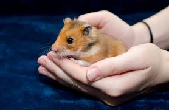
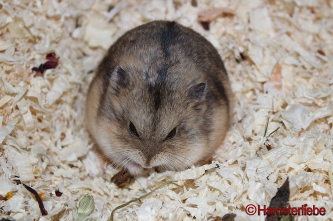
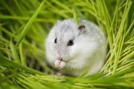
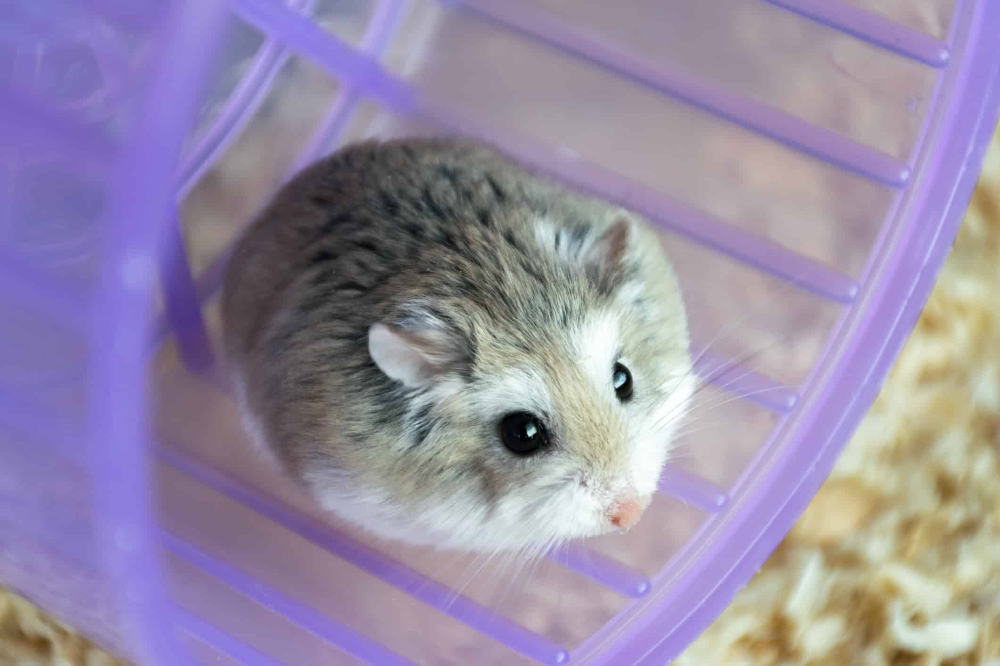
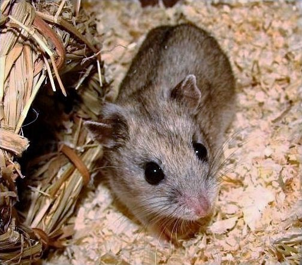

The Syrian hamster is the largest and one of the most popular pet hamster species. They are usually calm, fluffy, and easier to hold compared to smaller hamster types. Syrian hamsters prefer living alone because they can become territorial with other hamsters. They come in many different fur colors and patterns, making each one look unique and adorable.

The Dwarf Campbell hamster is much smaller than the Syrian hamster and is known for being active and curious. They move quickly and enjoy exploring their surroundings. Some Campbell hamsters can live together if introduced properly at a young age, but they may still fight sometimes. Their tiny size and energetic behavior make them fun to watch.

Winter White hamsters are small, round, and very cute. They are famous for their fur changing lighter or whiter during winter in certain conditions. These hamsters are gentle-looking and usually less aggressive than some other dwarf species. They enjoy tunnels, wheels, and cozy sleeping spots.

Roborovski hamsters are the smallest and fastest pet hamsters. They are extremely energetic and often zoom around their cage quickly. Because of their speed, they can be difficult to hold, but they are entertaining to watch. Robo hamsters are known for their tiny size, sandy colors, and playful personalities.

Chinese hamsters have a longer body shape compared to other hamsters, which makes them look slightly mouse-like. They are usually calm and can become comfortable with gentle handling over time. Their slim body and longer tail make them unique among hamster species. Chinese hamsters are intelligent and enjoy climbing and exploring.
Press here to Go back